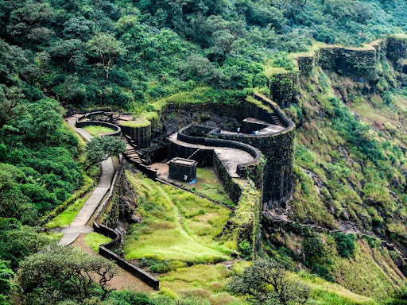
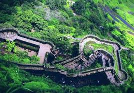
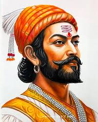

Chhatrapati Shivaji Maharaj
Rise of a Visionary Leader
Chhatrapati Shivaji Maharaj, born on 19 February 1630 at Shivneri Fort in present-day Maharashtra, was the founder of the Maratha Empire and a fearless visionary who championed the idea of "Swarajya"—self-rule. Raised by his mother Jijabai, a deeply spiritual and wise woman, and mentored by Dadoji Kondadev, Shivaji was instilled with values of justice, courage, and devotion to his motherland. Even as a teenager, he began assembling a loyal force and launched attacks to gain control of forts like Torna, Kondana, and Purandar—challenging the Bijapur Sultanate. One of the most legendary moments of his life occurred in 1659 during the encounter with Afzal Khan, a general sent to eliminate him. Shivaji, armed with a concealed “wagh nakh” (tiger claws), defended himself and killed Afzal Khan, securing a major victory at Pratapgad Fort. This triumph set the stage for further expansion as he captured key forts like Panhala and Vishalgad, gaining fame as a brilliant guerrilla tactician and military leader.Coronation, Governance, and Naval Strength
Shivaji's bold actions drew the attention of the Mughal Empire, leading to a fierce confrontation. In 1664, he plundered the wealthy Mughal port city of Surat, prompting Emperor Aurangzeb to act. After signing the Treaty of Purandar in 1665 and facing house arrest in Agra in 1666, Shivaji made a daring escape using fruit baskets—a move that became legend. Resuming his campaigns, he was formally crowned as Chhatrapati on 6 June 1674 at Raigad Fort, marking the birth of the sovereign Maratha rule. His administration was marked by an efficient revenue system, justice, religious tolerance, and merit-based governance through the Ashta Pradhan Mandal. Recognizing the strategic need for a naval force, he built a strong navy and fortified coastal forts like Sindhudurg and Vijaydurg, keeping foreign powers at bay. This naval strength earned him the title “Father of the Indian Navy.” Shivaji Maharaj’s legacy lives on not just as a warrior king, but as a just and enlightened ruler who laid the foundation for a powerful and self-reliant nation.Major Forts of Chhatrapati Shivaji Maharaj
Chhatrapati Shivaji Maharaj strategically built and captured several forts to establish and secure his vision of Swarajya. His military journey began with the capture of Torna Fort in 1645, followed by key forts like Kondana (Sinhagad), where the legendary Tanaji Malusare sacrificed his life. The majestic Raigad Fort became his capital and the site of his grand coronation in 1674. At Pratapgad Fort, he famously defeated Afzal Khan using the concealed wagh nakh. Rajgad Fort, his earlier capital, was crucial for administrative and residential purposes. The Purandar Fort played a vital role during the 1665 treaty with the Mughals. On the western coast, Shivaji fortified Sindhudurg and Vijaydurg Forts to build a strong navy and protect against sea invasions, earning him the title “Father of the Indian Navy.” Panhala Fort near Kolhapur served as a key defense point during battles with the Adilshahi, while Vishalgad Fort became famous for Shivaji’s daring escape and the heroic sacrifice of Baji Prabhu Deshpande. These forts, built across the Sahyadris and coastal regions, were not only military strongholds but also symbols of Maratha pride, resilience, and sovereignty.

Raigad Fort

Rajgad Fort
Torna Fort

Pratapgad Fort

Sinhagad Fort
Chhatrapati Shivaji Maharaj

Shivaji Shahaji Bhosale
Personal information
| Born | 19 feb 1630 Shivaneri |
| Height | Approx. 5 ft 5 in |
| Father | Shahaji Bhosale |
| mother | Jijabai |
| Religion | Hinduism |
| Coronation | 6 June 1674 |
| Known for | Founding the Maratha Empire |
| Died | 3 April 1680, Raigad Fort |